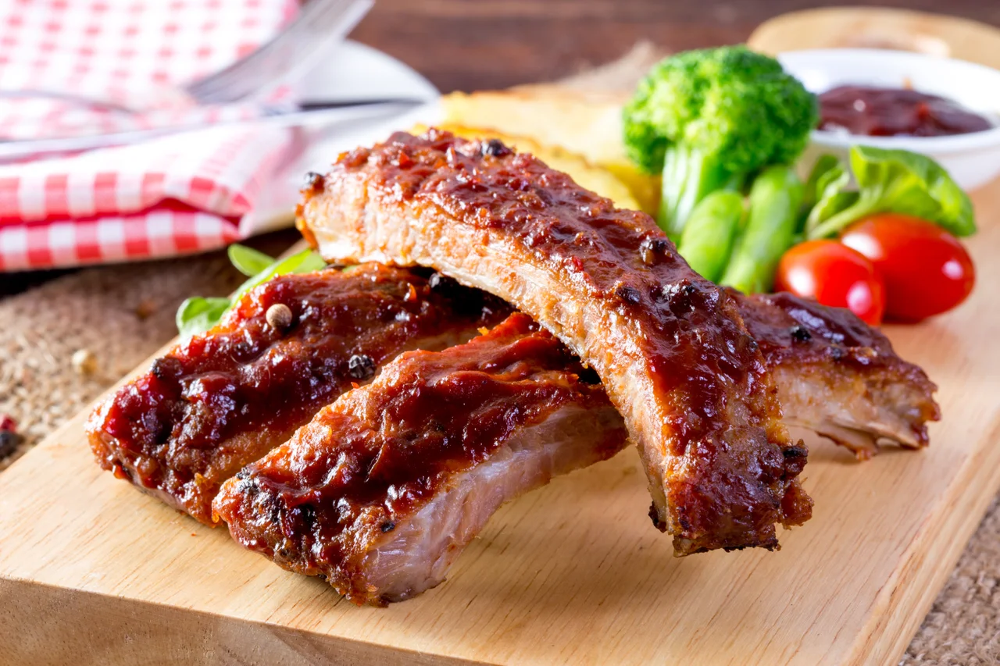

BBQ Ribs
By Chef Rjay · July 6, 2025
Smoky, tender, and finger-licking good — these BBQ ribs are slow-cooked to perfection and smothered in a rich, tangy sauce.
Tags:
BBQ
Ribs
Grill
Category:
Dinner
Meat
Ingredients
- 2 racks of pork ribs
- 1/4 cup brown sugar
- 2 tbsp paprika
- 1 tbsp garlic powder
- 1 tbsp onion powder
- Salt and pepper
- 2 cups BBQ sauce
Instructions
- Preheat oven to 300°F (150°C).
- Remove the membrane from the ribs and pat dry.
- Mix brown sugar, paprika, garlic powder, onion powder, salt, and pepper to make a dry rub.
- Rub mixture evenly over both sides of the ribs. Wrap in foil and place on a baking sheet.
- Bake for 2.5 to 3 hours until tender.
- Preheat grill to medium heat. Brush ribs with BBQ sauce and grill for 10–15 minutes, flipping and basting regularly.
- Let rest, slice, and serve with extra sauce on the side.
Share:
← Back to Blog
Comments